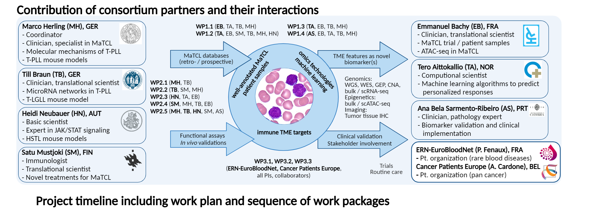
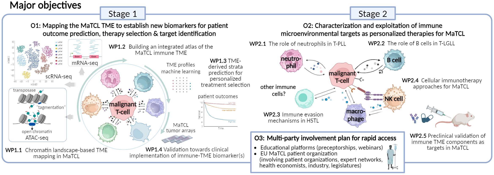

ImmuneT-ME is a European EP PerMed-funded consortium bringing together cancer biologists, clinical hematologists, immunologists, biocomputational scientists, as well as EU-wide professional and patient organizations to advance personalized medicine in mature T-cell leukemias and lymphomas. The project focuses on systematically characterizing the immune tumor microenvironment (TME) using multi-omics technologies, large patient cohorts, and computational approaches to identify novel biomarkers and therapeutic targets. By integrating functional validation in preclinical models with machine learning–based analyses, ImmuneT-ME aims to enable patient stratification and guide microenvironment-targeted therapies. Ultimately, the consortium seeks to translate these insights into clinical decision-support systems and future trials to improve outcomes for patients with these rare and aggressive malignancies.

Mature T-cell leukemias and lymphomas (MaTCL) comprise a heterogeneous group of rare hematologic malignancies with persistently poor outcomes, as 5-year survival rates for common subtypes remain below 30% despite advances in molecular characterization. Their biological diversity and low incidence pose major challenges for systematic data collection, clinical trial design, and the development of effective, personalized therapies. Therapies aimed solely at targeting the tumor cells have failed to extend MaTCL patient survival. Increasing evidence suggests that disease behavior is not solely driven by malignant T cells but is critically shaped by their dynamic interactions with the TME.
We hypothesize that a comprehensive, multi-layered understanding of the immune TME in MaTCL will uncover novel prognostic biomarkers and enable personalized, microenvironment-targeted therapeutic strategies. By integrating large-scale omics profiling and machine learning with functional validation in preclinical models, we aim to translate these insights into clinically actionable targets and patient stratification approaches. Ultimately, this framework is expected to inform decision-support systems and pave the way for biomarker-driven clinical trials in MaTCL.

This objective will generate a comprehensive map of the MaTCL immune tumor microenvironment across multiple disease entities. We will combine large-scale ATAC-seq-based TME deconvolution of more than 200 MaTCL samples with single-cell and RNA-seq validation to define robust microenvironmental signatures (WP1.1). Existing and newly generated multi-omics datasets will be integrated into a harmonized single-cell atlas of MaTCL immune-TME composition and cell states (WP1.2). Machine learning approaches will then be used to link these TME features with clinical outcomes, treatment responses and patient-specific prognosis (WP1.3), followed by validation of candidate biomarkers using tissue microarrays, immunohistochemistry and digital PCR to support clinical implementation (WP1.4).
This objective will identify and functionally validate clinically actionable immune-TME interactions that contribute to MaTCL pathogenesis, immune evasion and therapy resistance. Mechanistic studies will address entity-specific TME dependencies, including neutrophil–T-PLL interactions (WP2.1), B-cell involvement in T-LGLL (WP2.2), immune evasion in HSTL (WP2.3), and determinants of sensitivity or resistance to NK-cell-based immunotherapy (WP2.4). These findings will be integrated with the TME mapping from Objective 1 and tested in primary co-culture systems, patient-derived models and immunocompetent or humanized mouse models. Preclinical validation will prioritize microenvironment-targeted therapeutic strategies, including antibody-based depletion approaches, adoptive cellular therapies and mono- or bispecific antibodies (WP2.5).
This objective will ensure that ImmuneT-ME findings are translated beyond discovery research into clinical, professional and patient-centered impact. We will raise professional awareness and capacities around MaTCL through educational formats, expert networks, preceptorships, webinars and patient-oriented information resources (WP3.1). In parallel, the consortium will support the establishment of a visible pan-European MaTCL patient advocacy structure embedded within existing lymphoma and rare disease networks (WP3.2). A dedicated dissemination strategy, including the ImmuneT-ME webpage, partner platforms, scientific meetings and stakeholder engagement, will promote uptake of validated biomarkers, therapeutic concepts and decision-support tools by clinicians, patients, researchers, industry partners and policy stakeholders (WP3.3).
ImmuneT-ME aims to benefit patients with mature T-cell leukemias and lymphomas by enabling more precise diagnostics, improved risk stratification, and the development of personalized, microenvironment-targeted therapies. Clinicians and researchers will benefit from new biomarker concepts, harmonized datasets, preclinical models, and decision-support tools to guide future clinical trials. The project will also support patient organizations and advocacy networks by improving disease awareness, education, and access to expert knowledge across Europe. Beyond MaTCL, the consortium may provide broader insights into how tumor–microenvironment interactions can be leveraged for precision oncology in rare cancers.